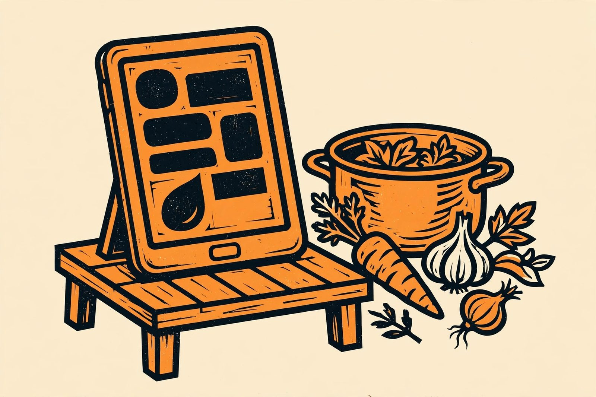

Turn a retired tablet into a kitchen display

A retired tablet that feels too slow for everyday apps can still be a fantastic kitchen companion. Recipes you can read at arm's length, a big visible timer, a running shopping list, and some music while you cook — that's a great second job for a screen that would otherwise sit in a drawer.
Why a tablet works well in the kitchen
Tablets were built for exactly this: big touch screens, speakers, Wi-Fi, and apps that barely tax the hardware. A tablet that stutters running a modern browser game is still completely fine showing a recipe page and running a countdown timer. Even a cracked-but-usable screen works here, since kitchen use is all big buttons and readable text.
Step 1: Prep it as a single-purpose device
Back up anything you want to keep, sign out of accounts you don't need, and remove unused apps. Then install just what the kitchen needs: your recipe app or saved web recipes, a timer/stopwatch, a shared notes or shopping-list app, and a music or radio app. Fewer apps means fewer notifications, less background activity, and a longer usable life. Turn on do-not-disturb on a schedule if you don't want messages popping up while your hands are covered in dough.
Step 2: Mount or stand it safely
A tablet needs a stable home: a stand on the counter, a magnetic mount under a cabinet, or a wall mount near your main work area. Keep it away from the stove and the sink — steam and splashes are the enemies. A screen protector and an inexpensive case pay for themselves on day one in a kitchen. If you mount it under a cabinet, make sure you can still reach the power button and the charging port easily.
Step 3: Handle the power situation
Like any always-on display, the tablet needs to stay charged. Route a cable to the stand so the tablet lives on its charger, and use a charger from a reputable source — counterfeit chargers and kitchens full of water don't mix. If the tablet supports a battery-protection setting that caps charging below 100%, turn it on; it keeps a permanently plugged-in battery healthier for longer. If the battery is swollen or the tablet gets hot in normal use, stop and recycle it — no kitchen convenience is worth a damaged lithium battery.
Recipes: make them kitchen-proof
The recipe use case deserves a little thought. Save recipes offline where you can, because kitchen Wi-Fi can be flaky and ad-covered recipe sites are miserable on an old browser. Bookmark a few reliable recipe sources, keep the tablet's screen timeout long enough that it doesn't go dark mid-step (many people set it to never sleep while plugged in), and turn the brightness up so it's readable from across the counter. A Bluetooth keyboard nearby is overkill — voice commands for timers and music work with messy hands.
Timers and music are the real win
Honestly, once it's mounted, the two things you'll use most are a big loud timer and music. Being able to say "set a timer for 12 minutes" or tap a giant start button without washing your hands first is the kind of small luxury that makes the project worth it. A shared shopping list is a close third: add things as you notice they're running low, right there in the kitchen.
Keep the software healthy
Old tablets stop getting OS updates, and that's fine for a kitchen display as long as you take two precautions: keep it signed out of sensitive accounts (banking, shopping with saved cards), and don't let anyone browse to sketchy sites on it. For recipe sites, a music app, and a timer, an older browser is enough — but treat the device as untrusted for anything important.